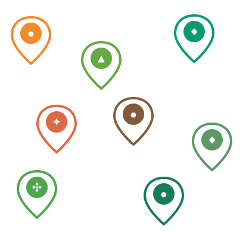
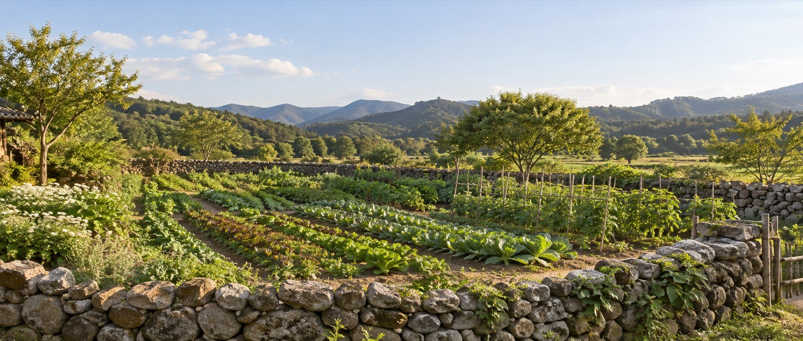
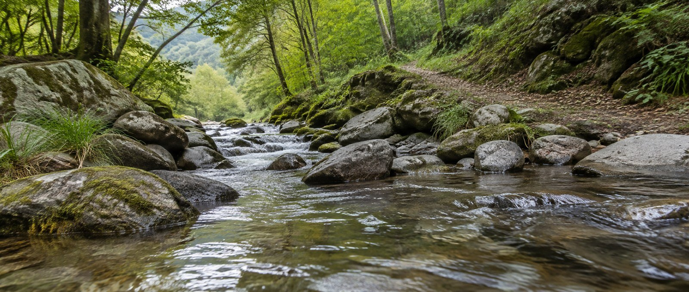
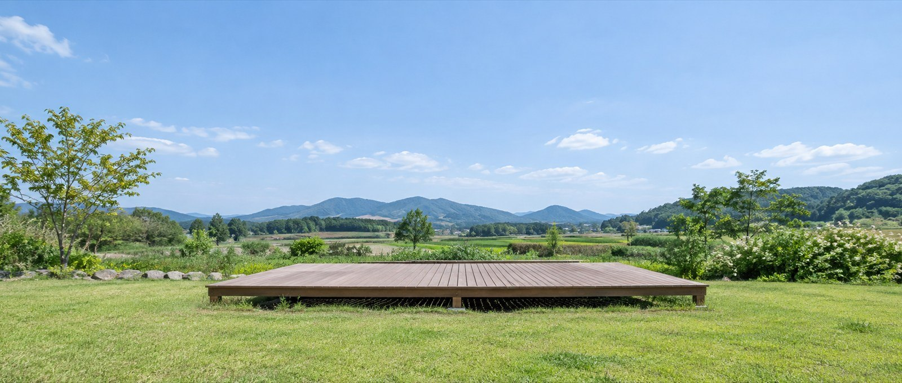
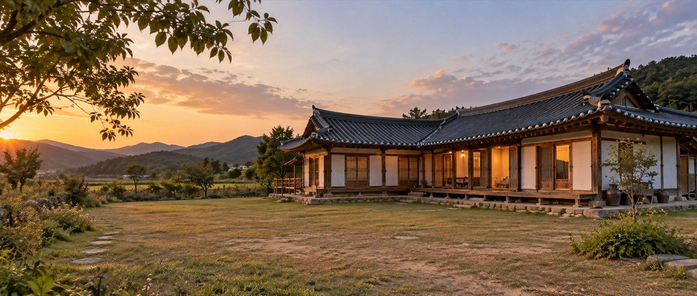
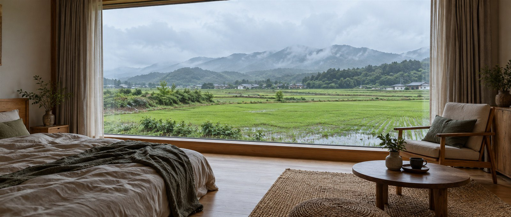
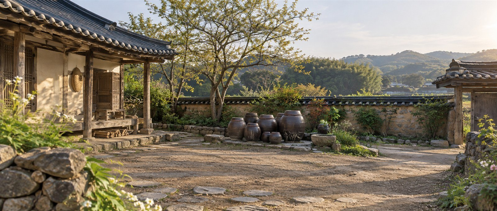

산길 끝에서 만나는
해솔산
바위 능선과 숲길이 이어지는
해솔산은 능선마다 전망이 달라
짧은 산책부터 긴 산행까지 고를 수 있는
온들군의 대표 산행지로 찾는 곳입니다
해솔산
- #해솔산길
- #숲전망
- #바위능선
- #산행
숲을 배우는 하루,
온들 큰숲수목원
큰숲수목원에는 온들 지역에서 자라는 나무와 들꽃을 모은 전시원이 있고
어린이가 관찰할 수 있는 야생동물 생태원과
토종 씨앗을 보관하고 연구하는
종자 연구동이 함께 운영됩니다
온들 큰숲수목원
- #온들숲
- #큰숲수목원
- #생태관찰
- #토종씨앗
솔숲 아래 작은 산사
해원사
해솔산 중턱에 있는 해원사는 오래된 소나무와 낮은 돌담으로 둘러싸여 있고
앞마당에서는 온들천과 건너편 들판을 함께 내려다볼 수 있습니다
해원사
- #해솔산
- #해원사
- #산사
- #걷기길
쉬러 와요 산골 온들마을!
둘러볼 온들군 마을을 선택해 주세요


온들여행 하루 코스
산길과 들길이 이어지는 온들군입니다

나무와 씨앗을 배우는 큰숲수목원
온들 큰숲수목원
온들 큰숲수목원에서는 지역 식물 전시원과 종자 연구동, 어린이 숲길을 함께 둘러볼 수 있습니다
- 주 소
- 온들군 푸른면 큰숲길 150
- 대표번호
- 010-4894-4905

바위 능선과 계곡을 함께 걷는
해솔산 자연공원
해솔산은 열두 개의 낮고 높은 봉우리가 이어지고, 산 아래 온들천이 절벽 곁을 흐릅니다. 전망대까지는 왕복 약 두 시간이 걸립니다.
- 주 소
- 온들군 강빛면 해솔길 39
- 대표번호
- 054-000-6653

작은 역사를 따라 걷는 별빛마을
별빛역마을
별빛역마을은 옛 간이역과 강변 데크길을 잇는 산책 코스를 운영합니다. 겨울에는 역 광장에 조명과 작은 장터가 들어섭니다.
- 주 소
- 온들군 물굽이면 별빛역길 26
- 대표번호
- 054-000-6351

나무를 만지고 배우는 체험장
온들 나무배움터
온들 나무배움터에는 생활 목기 전시실과 목공 실습실이 있습니다. 연령별로 연필꽂이, 작은 쟁반, 나무 장난감 만들기를 신청할 수 있습니다.
- 주 소
- 온들군 솔재면 나무길 151
- 대표번호
- 054-000-3363

정자와 누각의 쓰임을 살펴보다
온들 누정문화관
온들 누정문화관은 지역 정자의 구조와 생활 기록을 전시합니다. 마당에는 기둥 짜임을 직접 맞춰 보는 모형이 마련돼 있습니다.
- 주 소
- 온들군 솔재면 누정길 88
- 대표번호
- 054-000-6951

솔재 능선 아래 쉬어 가는 숲
솔재 자연휴양림
솔재 자연휴양림에는 순환 산책로와 숲속 숙소, 어린이 관찰 데크가 있습니다. 숙박과 체험은 별도로 예약합니다.
- 주 소
- 온들군 솔재면 숲길 378
- 대표번호
- 054-000-3700
01 11
온들여행 마을 소식
온들군 체험마을에서 전하는
운영 소식을 확인해 주세요
방문 이야기
공지사항
더보기- 2026년 온들 전원생활학교 참가자를 모집합니다 2026.03.12
- 온새미마을 시설 이용 요금 안내 2026.02.11
- 지난 전원생활학교 참가 안내(2025) 2025.04.16
- 지난 전원생활학교 참가 안내(2024) 2024.04.30
- 2023년 전원생활학교 운영 안내 2023.03.20
온들여행 이용 안내
교통과 식사 정보를 미리 확인하세요